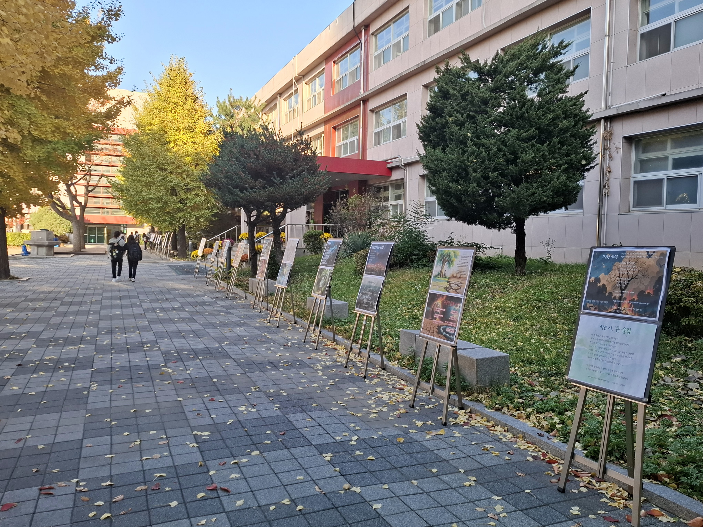
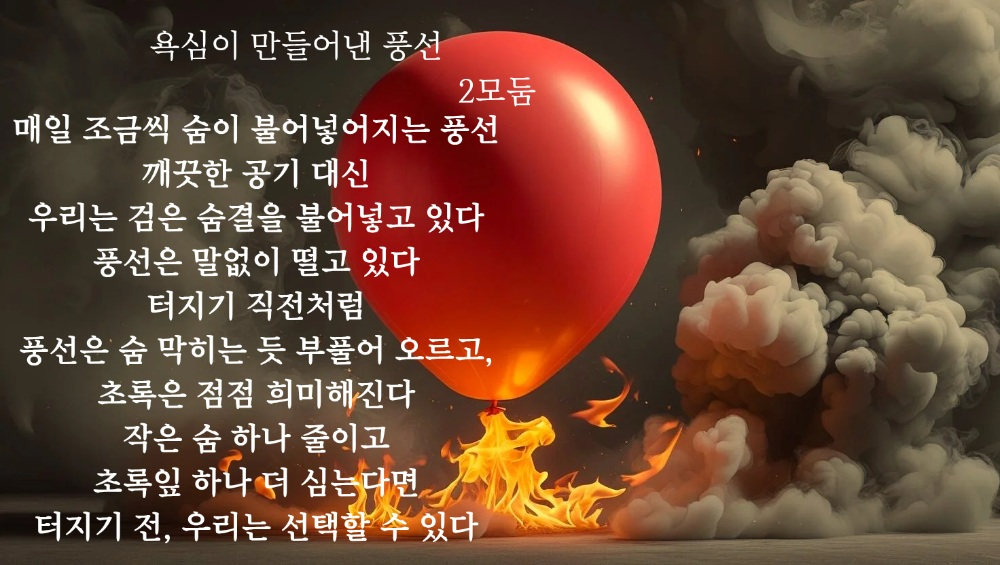
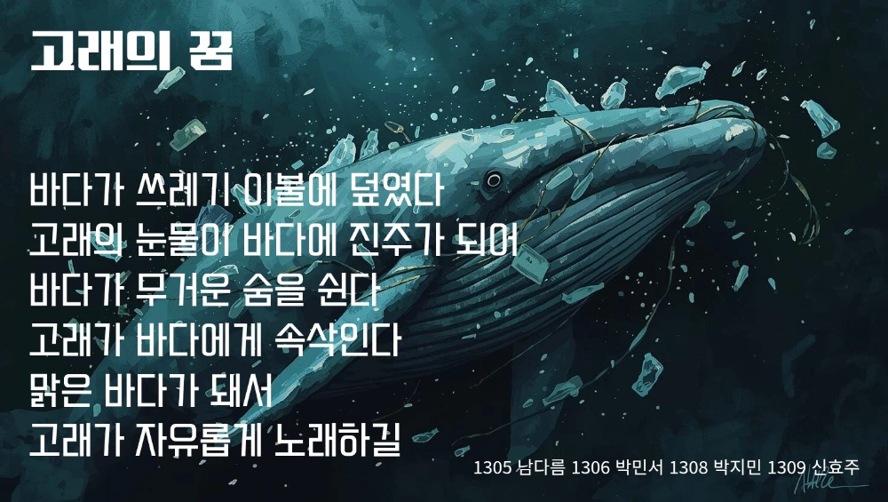
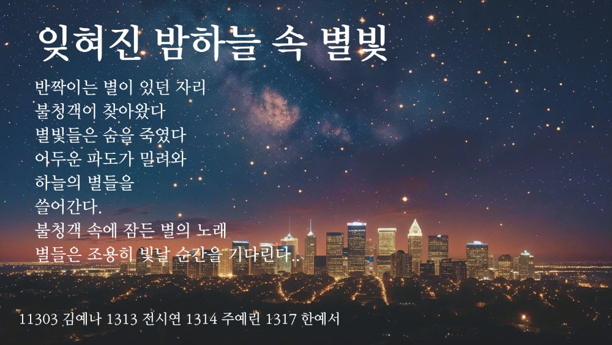
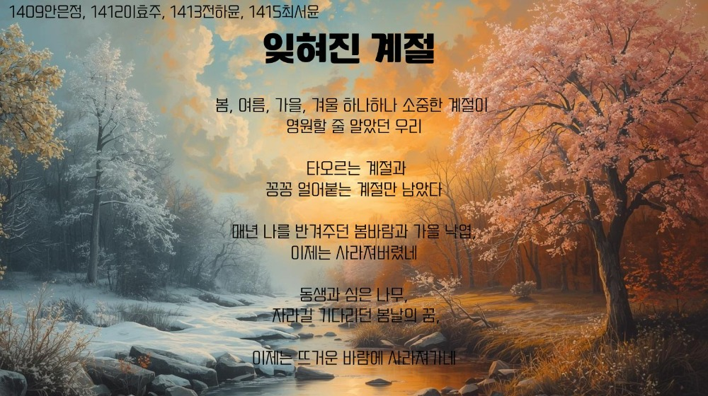
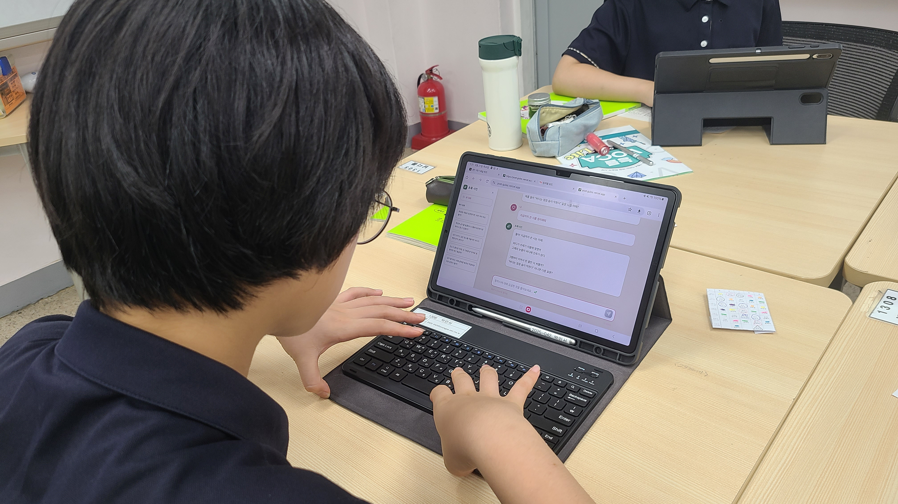
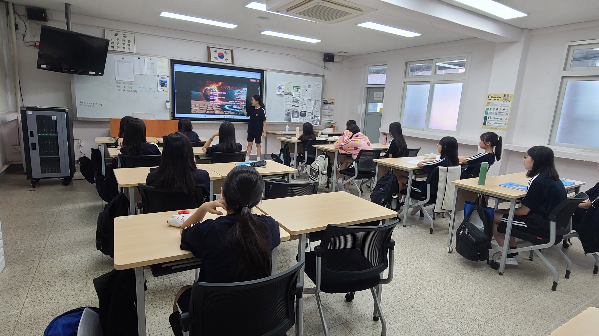
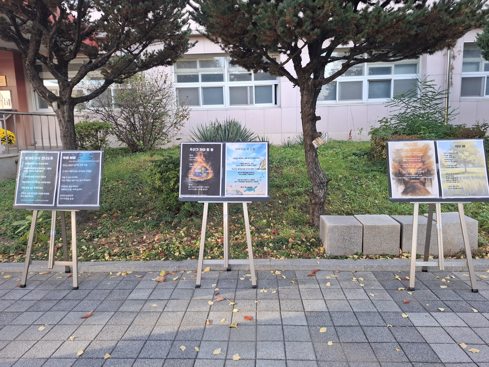

AI 챗봇 '초록시인'과 Canva AI를 활용하여 '저탄소 녹색성장'을 주제로 시를 창작하고, 온라인 에듀테크를 활용해 시화 작품을 공유하는 융합 수업 사례입니다.

독자가 수업의 전체 그림을 빠르게 파악할 수 있도록 핵심 정보를 제시합니다
4단계로 구성된 프로젝트 진행 순서
왜 이 수업을 기획했는지 교육적 맥락과 의미를 설명합니다
과학과(녹색성장)와 국어과(시 창작)의 융합을 통한 주제 심화
무작위 질문이 아닌 프롬프트 가이드를 통한 주체적 AI 활용 경험
환경에 대한 감정을 비유와 상징으로 표현하고 시각화하는 능력
다른 선생님들이 참고하여 재현할 수 있도록 구체적인 활동을 안내합니다
학생들이 AI 도구를 활용해 제작한 시화 작품입니다




학생들이 즐겁게 수업에 참여하고 협력하는 모습입니다


수업이 교실을 넘어 학교 공동체와 공유되었음을 보여줍니다

학교 야외전시
2025년 11월 17일~11월19일(3일간)
실천 경험을 바탕으로 한 노하우를 공유합니다